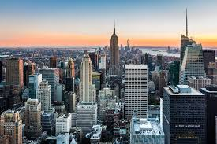
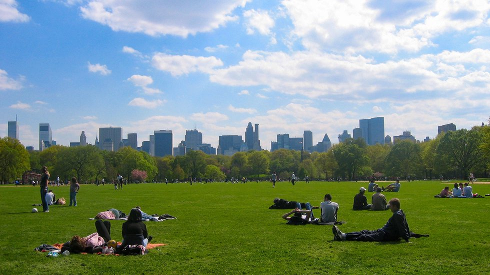

Historical Evolution of New York City
New York City's transformation from a Dutch trading post to a bustling metropolis is a captivating story of growth and change. This sub-topic explores key historical events and milestones such as the construction of the Brooklyn Bridge, the rise of Wall Street, and the city's role in major cultural and political movements.
- Establishment of New Amsterdam
- Construction of the Brooklyn Bridge
- The rise of Wall Street
- New York City's role in World War II
Watch a Brief History of NYC
New York City's Green Spaces and Parks
Despite its reputation as a concrete jungle, New York City is home to numerous green spaces and parks that offer a refreshing escape from urban life. Notable parks include Central Park, Prospect Park, and the High Line. This section provides detailed information on these parks, including maps, visitor tips, and highlights of seasonal activities.
Despite its reputation as a concrete jungle, New York City is home to numerous green spaces and parks that offer a refreshing escape from urban life. Notable parks include Central Park, Prospect Park, and the High Line. This section provides detailed information on these parks, including maps, visitor tips, and highlights of seasonal activities.
Overview of Popular Parks
| Park Name | Location | Size (Acres) |
|---|---|---|
| Central Park | Manhattan | 843 |
| Prospect Park | Brooklyn | 526 |
| The High Line | Manhattan | 1.45 |
Culinary Scene and Food Experiences
New York City's culinary scene is as diverse as its population, offering everything from street food to Michelin-starred dining experiences. This section covers the city’s food culture, highlighting various cuisines, famous food markets, and popular dining spots. It includes reviews, recommendations from local food critics, and information about culinary tours and food events.
- Street Food
- Michelin-Starred Restaurants
- Famous Food Markets
- Popular Dining Spots